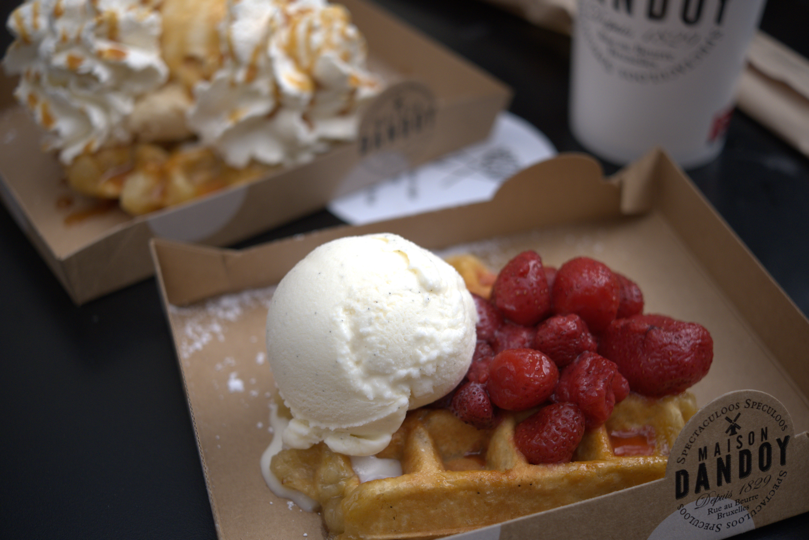

Vitesse d'obturation : 1/4000 sec |
ISO : 160 |
Ouverture : f/11
Image avec de la profondeur de champ, ISO bas sur une scène ensoleillée
Vitesse d'obturation : 1/1000 sec |
ISO : 160 |
Ouverture : f/8
Image plutôt rapprochée, vitesse d'obturation rapide afin de pouvoir "stopper" le mouvement de l'eau

Vitesse d'obturation : 1/4000 sec |
ISO : 400 |
Ouverture : f/2.8
Image en gros plan, grande ouverture permettant l'effet de flou